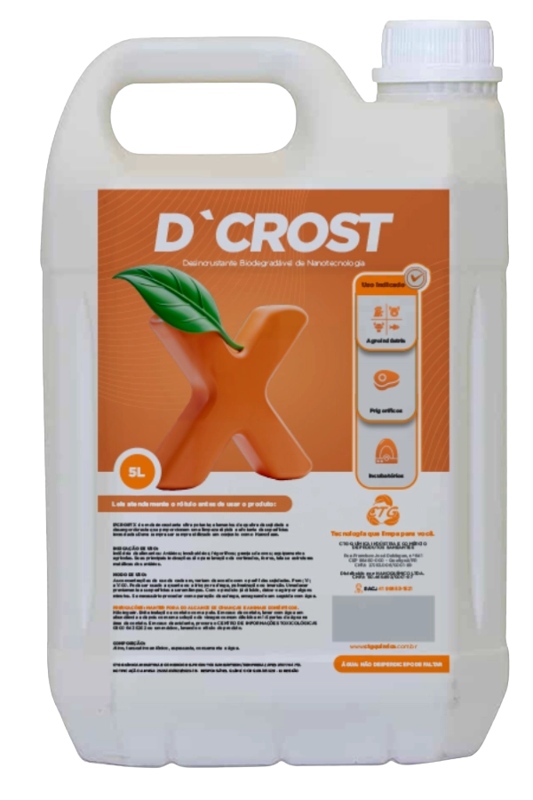
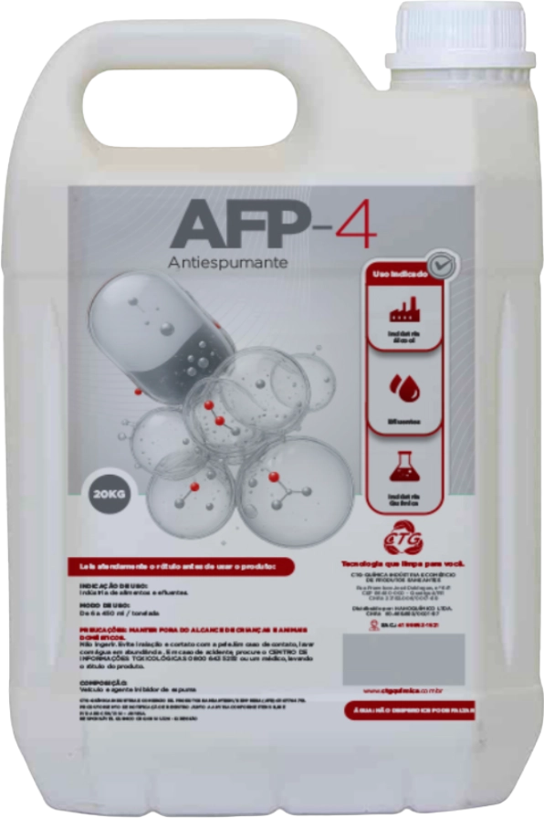
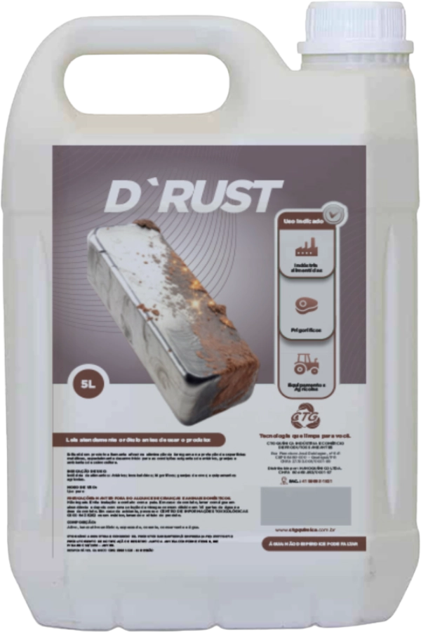
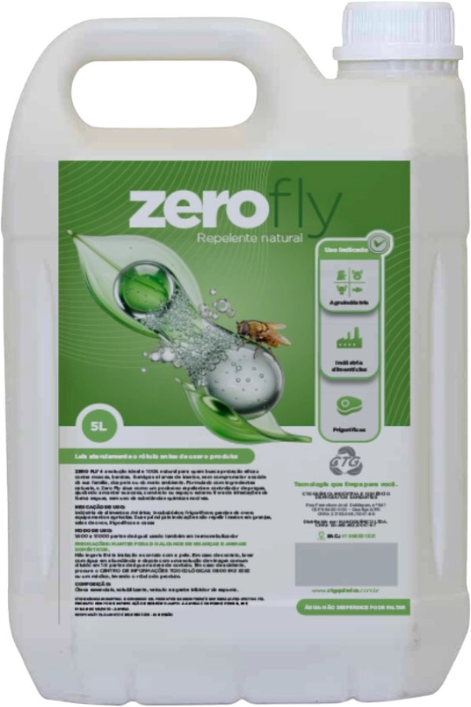
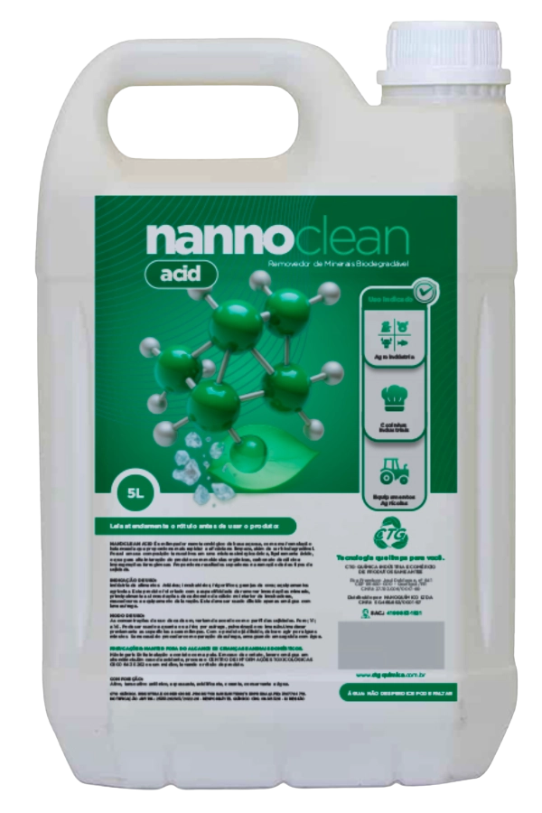
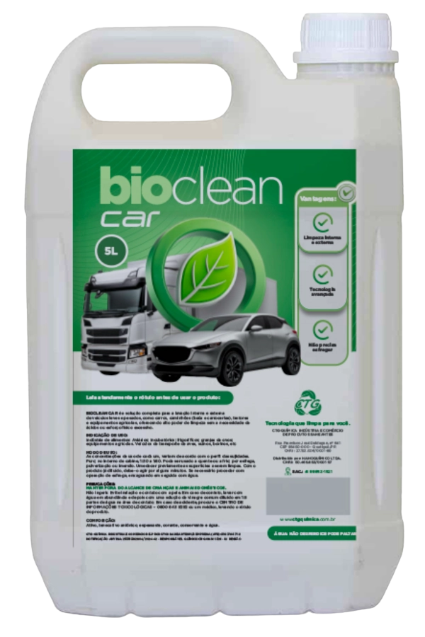
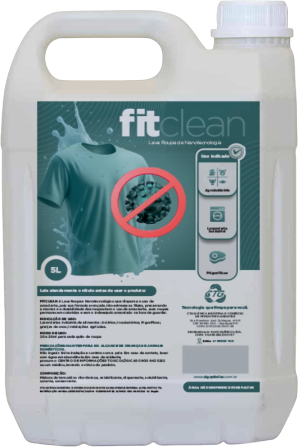

Tecnologia e Sustentabilidade para Aquicultura Moderna
A CTG-Química desenvolve tecnologias voltadas à aquicultura sustentável, combinando nanotecnologia e formulações de base aquosa para atender aos rigorosos padrões sanitários de fazendas aquícolas, estações de tratamento e unidades de processamento.
Nossa linha de produtos oferece uma abordagem integrada para a gestão da higiene e do equilíbrio biológico dos sistemas de cultivo:
Higienização de Tanques e Equipamentos: Produtos enzimáticos como o Nannoclean atuam na desintegração de biofilmes e resíduos orgânicos em tanques de cultivo, redes e berçários. A formulação biodegradável elimina a necessidade de solventes agressivos, preservando a fauna microbiana benéfica do sistema.
Gestão da Qualidade da Água: Antiespumantes como o AFP-4 controlam a formação de espumas em sistemas de recirculação (RAS) e estações de tratamento. Otimizam a oxigenação e a eficiência dos filtros biológicos, essenciais para a manutenção dos parâmetros da água.
Manutenção de Infraestrutura: Soluções como o D'RUST tratam e protegem estruturas metálicas expostas à umidade constante, como aeradores, passarelas e cercas. A remoção eficaz de corrosão estende a vida útil dos ativos da propriedade.
Biosseguridade e Logística: Controle de vetores com produtos 100% naturais como o Zerofly, e higienização de frotas de transporte com o Bioclean Car. Soluções completas para manter as instalações livres de pragas e contaminantes.
O foco na biosseguridade e no manejo eficiente de efluentes assegura produção em ambiente controlado e em conformidade ambiental.
Nossos Produtos

Ideal para a limpeza de tanques...
de cultivo, redes e berçários. Sua ação enzimática desintegra biofilmes e resíduosorgânicos (restos de ração e dejetos) de forma rápida e segura. Por ser totalmente biodegradável e de base aquosa, reduz os riscos de resíduos químicos tóxicos no ambiente de cultivo.
 Tanques de Cultivo
Tanques de Cultivo

Indicado para limpeza pesada...
de áreas externas, calçadas e estruturas de suporte que apresentem alto grau de impregnação orgânica ou lodo. Tecnologia de alta potência para superar os limites dos produtos comuns.
Áreas Externas

Essencial em sistemas de recirculação...
(RAS) e estações de tratamento de efluentes. Atua na eliminação de espumas geradas pelo excesso de proteínas e matéria orgânica na água, otimizando o processo de oxigenação e a eficiência dos filtros biológicos e mecânicos.
Sistemas RAS

As estruturas metálicas em fazendas...
de aquicultura sofrem oxidação acelerada devido à umidade constante. O D'RUST elimina a ferrugem e protege componentes de aeradores, passarelas e suportes metálicos, estendendo a vida útil dos ativos.

Fundamental para manter as áreas...
de processamento, depósitos de ração e laboratórios livres de insetos. Por ser 100% natural, pode ser utilizado em instalações aquícolas com maior segurança, evitando o uso de inseticidas sintéticos.
Áreas de Processamento

Recomendado para remoção...
de incrustações minerais e calcárias em sistemas de tubulação, bombas e aeradores. É eficaz na manutenção preventiva de equipamentos que operam submersos ou em contato constante com a água.
Sistemas de Tubulação

Solução para limpeza da frota...
de transporte (caminhões-tanque) e embarcações. Garante a remoção de sujidades pesadas e odores característicos da atividade sem agressir a pintura ou as vedações dos veículos.

Recomendado para a lavanderia...
de uniformes e redes de proteção, garantindo a eliminação de odores e contaminantes orgânicos através da tecnologia de limpeza profunda.
Redes de Proteção